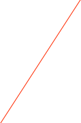
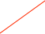

SIS3820


In ORCA it can be placed into either a standard VME crate or the VME64 crate.
See the manual for more specific information.
Read current scaler values, clear internal values, and continue. Doesn’t ship values.
Set the VME Address

Data Production
In general, the scaler data records will be placed into the data stream at the polling frequency unless you have selected the ‘Ship ONLY at End of Run’ option. The manual options (i.e. pushing the ‘Read Now’ or ‘Read And Clear’ will NOT ship a data record. On the ‘Ship ONLY at End of Run’ option, the counters will be read at the end of run and the result will be shipped.
Waveform record:
xxxx xxxx xxxx xxxx xxxx xxxx xxxx xxxx
^^^^ ^^^^ ^^^^ ^^----------------------- Data ID (from header)
-----------------^^ ^^^^ ^^^^ ^^^^ ^^^^- length
xxxx xxxx xxxx xxxx xxxx xxxx xxxx xxxx
--------^-^^^--------------------------- Crate number
-------------^-^^^^--------------------- Card number
--------------------------------------^- 1==SIS38020, 0==SIS3000
xxxx xxxx xxxx xxxx xxxx xxxx xxxx xxxx time read in seconds since Jan 1, 1970
xxxx xxxx xxxx xxxx xxxx xxxx xxxx xxxx last time read in seconds since Jan 1, 1970 (zero if first sample)
xxxx xxxx xxxx xxxx xxxx xxxx xxxx xxxx count enabled mask
xxxx xxxx xxxx xxxx xxxx xxxx xxxx xxxx overFlow mask
xxxx xxxx xxxx xxxx xxxx xxxx xxxx xxxx options
-------------------------------------^^- lemo in mode
------------------------------------^--- enable25MHzPulses
-----------------------------------^---- enableInputTestMode
---------------------------------^------ enableReferencePulser
--------------------------------^------- clearOnRunStart
-------------------------------^-------- enable25MHzPulses
------------------------------^--------- syncWithRun
xxxx xxxx xxxx xxxx xxxx xxxx xxxx xxxx counts for chan 1
..
..
xxxx xxxx xxxx xxxx xxxx xxxx xxxx xxxx counts for chan 32
Start/Stop the counting
Display either the raw scaler values or a live-time based on the count of the reference channel
You can edit the channel names in place
Load dialog settings to HW
Channel to use in the live-time calculations

Reset to default settings. Stops counting.

On an overflow condition, the affected channel count values will turn red but will continue counting. You can clear the overflow condition here.

Front panel lemo input/output modes and description
Read current scaler values. Doesn’t ship values.
How often to read the counters. Ships data unless ‘Shipping only at End of Run’ option is selected